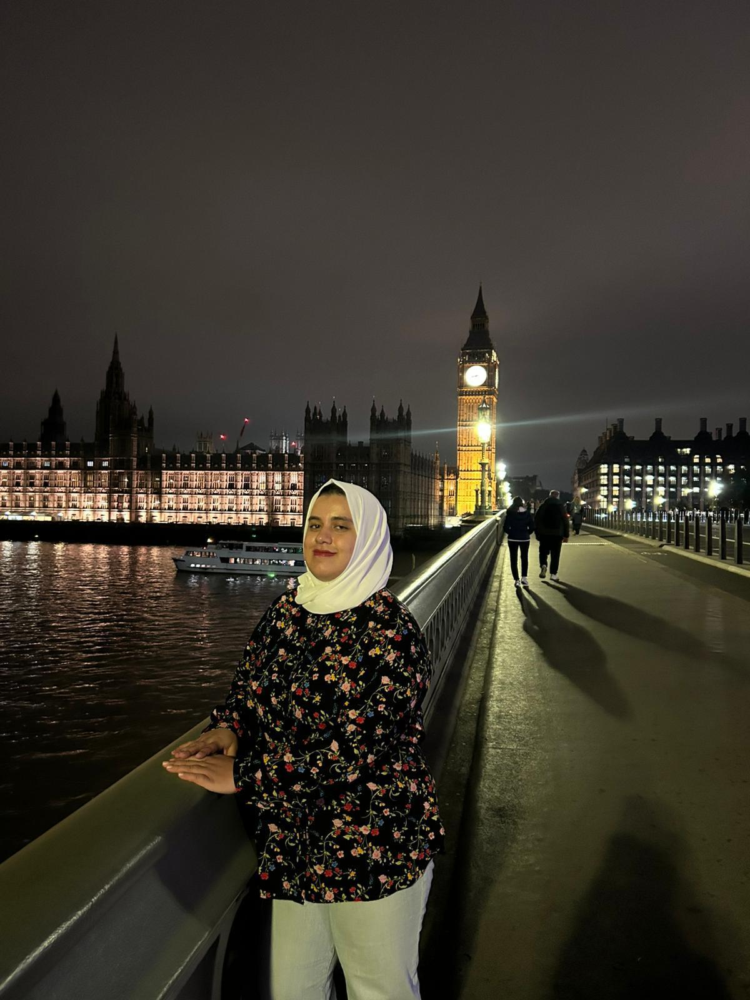

Replicable policy model
A structured concept intended to be adaptable across humanitarian settings.

Fellowship programme Fellow
A Palestinian medical doctor from Gaza connecting frontline healthcare experience with health-system leadership, maternal and infant health, and community impact.
Back to Fellowship programme
About the Fellow
Nada is a Palestinian medical doctor from Gaza and a Chevening Scholar pursuing an MSc in Global Health Management at the University of Greenwich.
Nada's journey reflects resilience, service and a commitment to meaningful change through health, open knowledge and community leadership.
Professional & academic background
After studying medicine in Palestine, Nada worked on the front lines of healthcare in challenging humanitarian settings. As a Medical Officer with UNRWA, Nada supported vulnerable communities and delivered patient-centred care.
Nada later contributed to maternal and infant health initiatives in Gaza, helping to develop referral systems and support pathways for mothers and newborns.
Now based in London, Nada is expanding her expertise in health systems, management and policy, with a focus on healthcare access for underserved populations and sustainable services in fragile settings.
Proposed initiative
A conceptual, replicable policy and online support model designed to strengthen breastfeeding support during humanitarian crises.
LactaBridge is a proposed policy and online support model for breastfeeding in humanitarian emergencies. It brings together infant and young child feeding guidance, gender-based violence referral pathways, remote IBCLC mentorship and support for complex feeding cases.
The concept is in the early stages of development. Informed by Nada's frontline experience, it is designed specifically for humanitarian and low-connectivity contexts.
A structured concept intended to be adaptable across humanitarian settings.
Online mentorship is proposed as a way to extend specialist support where local access is constrained.
The early-stage model is being shaped around the practical constraints of fragile contexts.
Support the Fellowship
Support for the Fellowship can help Nada continue postgraduate development while strengthening the community-focused work that informs LactaBridge.